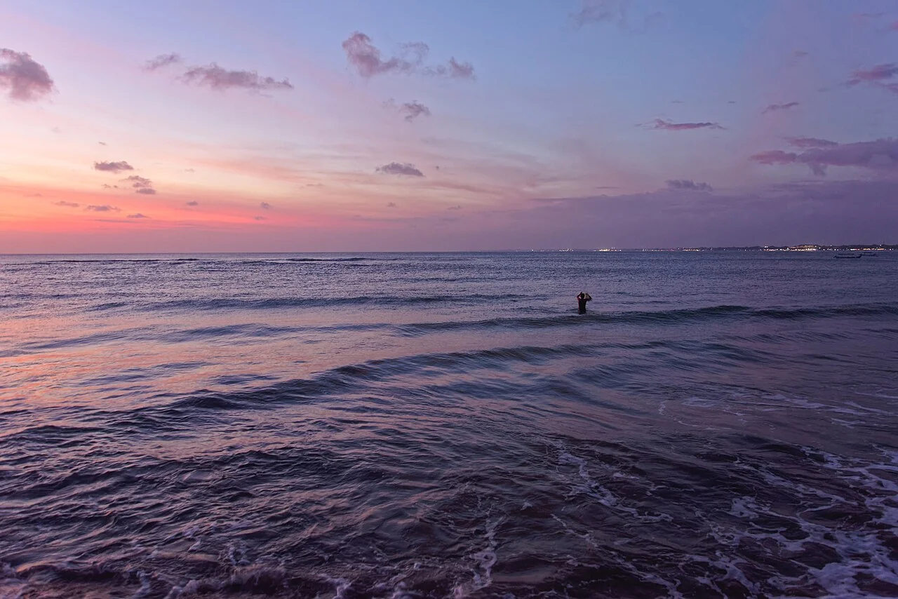

Kuta Beach
Bali, Indonésie · surf

Le front de mer de Kuta, dans le sud de Bali. Une plage associée depuis longtemps au développement du surf sur l’île.
- Lieu
- Bali, Indonésie
- Niveau
- Variable selon les conditions
- Activités
- surf
- Type d'eau
- Mer / océan
- Coordonnées
- -8.72, 115.17 (position approximative du secteur)
Ouvrir dans Ocean Buddy Télécharger sur l'App Store
Source : Indonesia Travel.